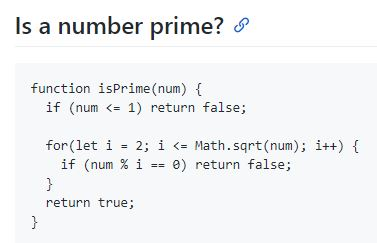

Summary
I would like to become a part of community that creates practically everything in our modern world. Learning new information every day, communication with smart people and creating useful projects is my goal.
Skills
I am learning Java Script right now. Also I passed some courses on HTML&CSS.
Code examples
Experience
I've started my codewars profile where I solve different JS tasks.
Education
I graduated from Gymnasium №1 with Physics and Mathematics faculty in Vitebsk. Then I graduated from Belarusian National Technical University with a degree in economics, logistics and engineering.
English
I have been studying English at school and university for about 15 years. I've always loved to speak it and to understand more their culture. I've never talked to a native speaker before I had a chance to visit the USA via work&travel programm for studens. Three month of summer 2017 I spent in the US and it was the best practice of English for me, I suppose. I worked as a waiter and everyday I communicated with native speakers who visited the restaurant I worked at. The whole team was also American. So English language takes a big part in my life experience.